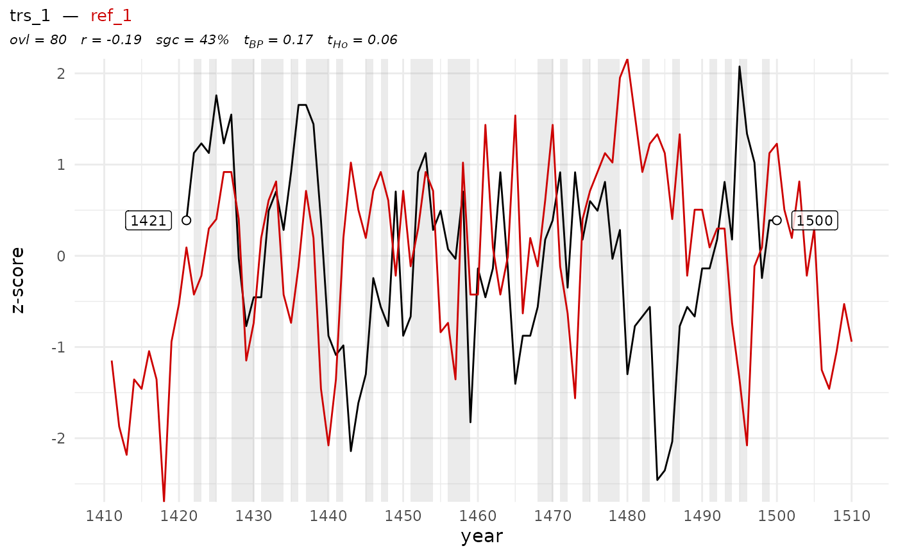

Plot a dated tree-ring series with a reference series or chronology
Source:R/trs_plot_dated.R
trs_plot_dated.RdCreates a line plot of a dated tree-ring series and a reference chronology, with optional z-score standardization, statistical annotations, and visual highlighting of synchronous growth changes (SCG).
Usage
trs_plot_dated(
x,
y,
end_year = NULL,
zscore = TRUE,
pv_highlight = TRUE,
pv_alpha = 0.2,
show_stats = TRUE,
labels = TRUE,
label_size = 3
)Arguments
- x
A
data.frame(typically of class'rwl') with one column of ring-width values. Row names must be numeric and represent calendar years.- y
A
data.frame(typically of class'rwl') with one column of ring-width values. Row names must be numeric and represent calendar years.- end_year
Optional numeric. If provided, the rownames of
xwill be set to match this year for the last ring (usingtrs_end_date()).- zscore
Logical. If
TRUE, the ring-width series are standardized to z-scores before plotting. Defaults toTRUE.- pv_highlight
Logical. If
TRUE, highlights regions of parallel variation (synchronous growth change - sgc) using shaded bars. Defaults toTRUE.- pv_alpha
Numeric between 0 and 1. Controls the transparency of the parallel variation highlight. Defaults to
0.2.- show_stats
Logical. If
TRUE, displays crossdating statistics (e.g., overlap, correlation, sgc, t-values) as a plot subtitle. Defaults toTRUE.- labels
Logical. If
TRUE, displays year labels and points at the start and end positions. IfFALSE, neither labels nor points are shown. Defaults toTRUE.- label_size
Numeric. Controls the size of the year labels. Defaults to
3.
Details
The function assumes that x and y are already calendar-dated and aligned by row names.
It performs internal trimming and optional z-scoring before plotting. Crossdating statistics
are computed using trs_crossdate(), and regions of synchronous growth change (SGC) are highlighted.
Required helper functions include: trs_trim, trs_zscore,
trs_end_date, and sgc_for_plot. Statistics are derived from trs_crossdate.
Required packages: ggplot2, ggtext, plyr
Examples
x <- trs_pseudo_rwl(n_series = 1, series_length = 80, end_date = 1500, prefix = "trs_")
y <- trs_pseudo_rwl(n_series = 1, series_length = 400, end_date = 1700, prefix = "ref_")
trs_plot_dated(x, y)
#> Warning: Ignoring unknown parameters: `linewidth`
